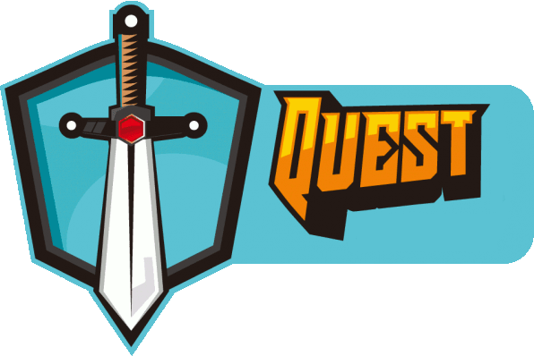
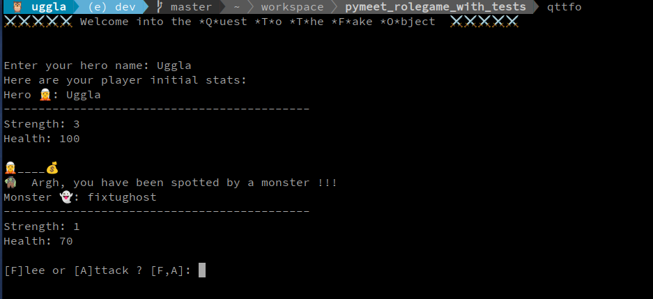
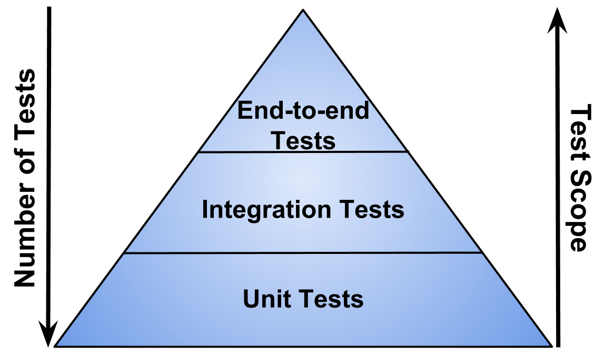

Quest to the fake object
2 words about us
- Stats
- First name: Sylvain
- Last name: Bauza
- Age: 42
- Skills
- Class: Software engineer
- Subclass: Upstream Nova PTL
- Latest Guilde: Red Hat
- Preferred weapon: Python / Bash
- Artefact: Openstack Nova
- Age of Experience: 9 years
- Optional traits
- Like winter vegetables
- Hardware wrangler
- Community herder
2 words about us
- Stats
- First name: René (Uggla)
- Last name: Ribaud
- Age: 47
- Skills
- Class: Software engineer
- Previous Class: Solution architect (Cloud / Devops)
- Latest Guilde: Red Hat
- Game start: 1998
- Preferred weapons: Python / Rust
- Artefact: Openstack Nova
- Optional traits
- Linux and FLOSS since 1995
- Participate in "Les Compagnons du Devops" podcast
What has motivated this call ?

- Discussion about testing and the conclusion that mocking is a mandatory skill to write good tests
- Present mocking in python which is really powerful and quite easy to implement
- Revival of the Grenoble python meetup
What we will try to cover with this presentation ?
- Speak a little about testing in python looking at 2 testing frameworks
- unittest
- pytest
- Mainly focus on the mocking part
- and covering both unit tests and integration tests
How ?
- We will go back and forth looking at the slides and reviewing code (📺) in the editor
- Feel free to interrupt or ask questions if something is unclear
- Of course it is better to have interactions, we can play with the code
Disclaimer
- Code samples are probably not clean or production ready
- Tests are biased and adapted to the demonstration
- We have only built tests we need to illustrate our talk
- Looking at all features of test frameworks is impossible in a 1h time slot
- This talk does not deal with the method to write tests like TDD or whatever, despite that's interesting
Our toy application
📺 code review...
https://github.com/sbauza/qttfo
Unittest framework
- Coming straight from Smalltalk (and later Junit) testing patterns principles
- Easy to read but API syntaxic
- Builtin in python
- Mock now included into the unittest framework, not a module anymore
- Scope and test hierarchies are the keys to success
Pytest framework
- External module
- Can be extended with plugins
- Fixtures oriented
- Compatible with unittest
- Bring a lot of features to discover and launch tests
A classic sequence of testing
- The test runner runs the sequence
- Some grouping may happen within test suites
- Fixtures are applied before the test
- The unit of test is run
- Some post-op and cleanup tasks are made
Basic Unit Tests
📺 code review...
- Unittest tests/unittest/test_character.py::TestHealth:
- Pytest tests/pytest/test_character.py::TestHealth
Test doubles
- Dummies : do nothing
- Stubs : return canned data
- Mocks : record calls to the object
- Fakes : simplifies the logic by faking it
- Spies : record and delegate to the real object
Structure of a SUT : The A-A-A testing pattern
- Arrange : pre-conditions for your test
- Act: the most minimalistic call that returns a response
- Assert: assertions on the response state and ideally on the internal behaviour
Mocking inputs
📺 code review...
- Unittest tests/unittest/test_character.py::TestPlayer
- Pytest tests/pytest/test_character.py::TestPlayer
Mocking the client calls to our external service
📺 code review...
- Unittest tests/unittest/test_client.py
- Pytest tests/pytest/test_client.py
Mocking stdout and advanced usage of mock objects
📺 code review...
- Unittest tests/unittest/test_game.py
- Pytest tests/pytest/test_game.py
Eventually, mocking our controller
📺 code review...
- Unittest tests/unittest/test_main.py
- Pytest tests/pytest/test_main.py
Do you feel the danger zone of mocking ?
- Too many stubs lead to false positives
- Don't do state testing, prefer behavioural testing !
- When you start piling the mocks for a single test, maybe this is a signal for a change...
What we could do then ?
- Rewrite your interfaces using SOLID principles by creating Facades or Adapters
- Try to follow Functional Core/Imperative Shell as much as possible
- Add integration tests
- Use fakes for your unit and integration tests
Tests pyramid
- Openstack
- tempest tests
- functional/integration tests (use fixtures)
- unit tests
- Test types definition is foggy

Using fakes for our integration tests
📺 code review...
- Only patch the connection to the external API
- This requires a stateful fixture for faking it
Don't starve
- All monsters pictures are copyrighted to Klei Entertainment
- Buy this game it is really fun, and better than ours 😉
- https://www.klei.com/games/dont-starve

- Sylvain Bauza <sbauza@redhat.com>
- René Ribaud <rribaud@redhat.com>